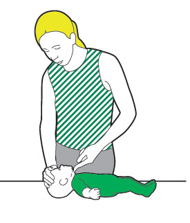
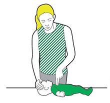
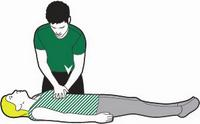

First check if the baby is responsive by tapping or flicking sole of foot. Next check if they are still breathing normally and then call either 999 or 112
Place one hand on the baby's forhead and gently tilt the head back then place one fingertip on the end of the babys chin
Listen for Breathing
If breathing normally hold in recovery position (on side in arms facing into your bicep) then craddle in arms
If not done already call 999 or 112
place one hand on the childs's forhead and gently tilt the head back (mouth should fall open slightly) then place fingertips on the end of the child's chin
Check to ensure breathing then put in recovery position
Kneel down next to them. Place their arm nearest you at a right angle to their body, with the palm facing upwards.
Take their other arm and place it across their chest so the back of their hand is against their cheek nearest you, and hold it there. With your other hand, lift their far knee and pull it up until their foot is flat on the floor.
Now roll the child onto their side. Carefully pull on their bent knee and roll them towards you. Once you've done this, the top arm should be supporting their head and the bent leg should be on the floor to stop them from rolling over too far.
place one hand on the Casualty's forhead and gently tilt the head back (mouth should fall open slightly) then place fingertips on the end of the Casualty's chin
Check to ensure breathing then put in recovery position
Place their arm nearest you at a right angle to their body, with their palm facing upwards.
Take their other arm and place it across their chest so the back of their hand is against their cheek nearest you, and hold it there. With your other hand, lift their far knee and pull it up until their foot is flat on the floor.
Now you're ready to roll them onto their side. Carefully pull on their bent knee and roll them towards you. Once you've done this, the top arm should be supporting the head and the bent leg should be on the floor to stop them from rolling over too far.
If you think the casualty could have a spinal injury, you must keep their neck as still as possible. Instead of tilting their neck, use the jaw thrust technique: place your hands on either side of their face and with your fingertips gently lift the jaw to open the airway, avoiding any movement of their neck.
If baby is unresponsive phone 999 or 112 then check mouth and pick out anything blocking it.
Take a breath and place your lips around baby's mouth.
Blow into the baby's mouth slowly until their chest rises.
Remove mouth and allow their chest to fall repeat four times.
Now give 30 chest compressions (one compression: Place finger tips on chest bone push down at least one third then release pressure and let chest come up fully at the rate of twice a second)
Repeat two more breaths then 30 more compressions continue until help arrives or until baby is breathing again
Once the baby is breathing again put in recovery position
If child is unresponsive phone 999 or 112 then check mouth and pick out anything blocking it.
Ensure the child's airway is open
Pinch their nose firmly closed
Take a deep breath and seal your lips around their mouth
Blow steadily into the mouth until the chest rises
Remove your mouth and allow the chest to fall
Now give 30 chest compressions (one compression: Place hand on chest bone push down at least one third of the way then release pressure without removing your hand and let chest come up fully at the rate of twice a second)
Repeat two more breaths then 30 more compressions continue until help arrives or until child is breathing again
If unresponsive phone 999 or 112 then check mouth and pick out anything blocking it.
Ensure the casualty's airway is open
Now give 30 chest compressions (one compression Lean over the casualty, with your arms straight, pressing down vertically on the breastbone, and press the chest down by 5-6cm then release pressure without removing your hands and let chest come up fully at the rate of twice a second)
Do two Rescue breaths (one rescue breath: Ensure the casualty's airway is open Pinch their nose firmly closed take a deep breath and seal your lips around their mouth blow steadily into the mouth until the chest rises remove your mouth and allow the chest to fall)
Repeat 30 more compressions then two more breaths continue until help arrives or until child is breathing again